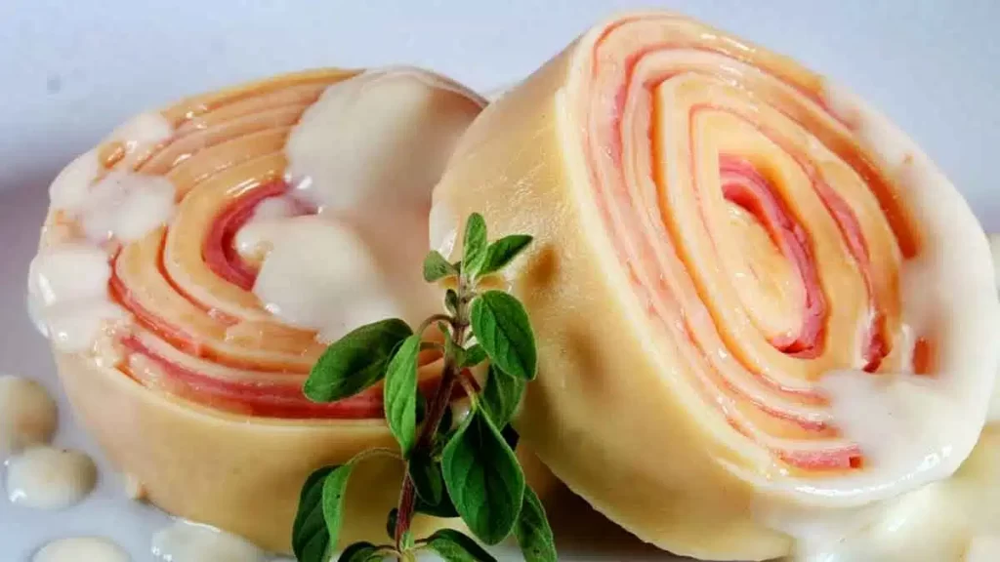

Delicadas fatias de massa fresca artesanal, enroladas com generosas camadas de presunto, queijo muçarela derretido e a cremosidade do requeijão. Tudo isso gratinado e mergulhado no inconfundível e apurado Molho de Tomate da Nonna. Um clássico que abraça o paladar.
Ingredientes:Preço: R$ 50,00